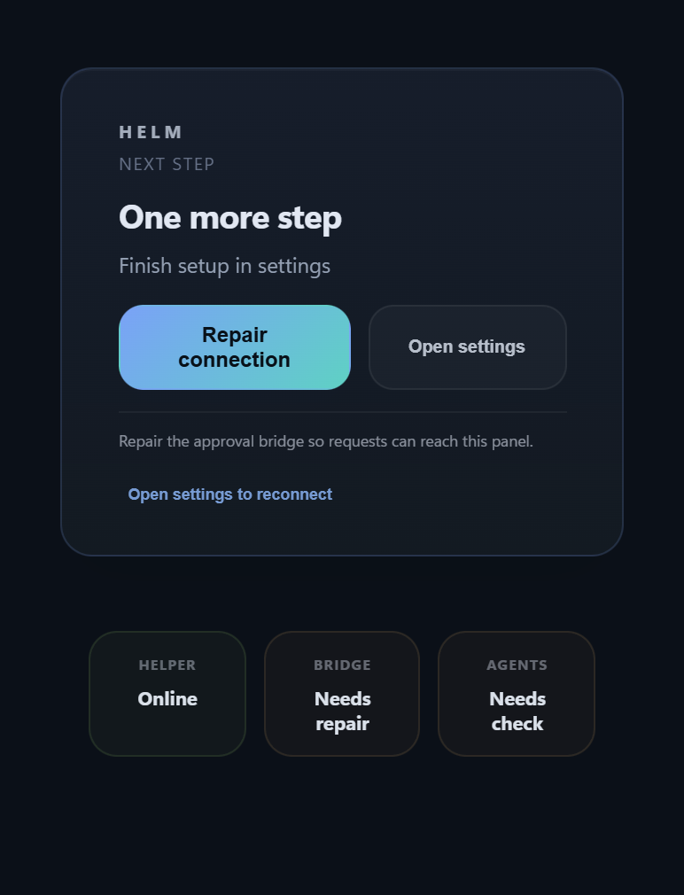

Approve AI coding actions without leaving Windows.
helm catches Claude Code, Codex, and Gemini CLI requests before they touch your machine. Review commands, file edits, plans, and questions from a desktop panel instead of alt-tabbing back to the terminal.
This could alter critical data.
The assistant wants to run a destructive shell command. Review the command and decide whether to let it continue.
Built for the Windows terminal workflow.
helm keeps approvals, launch, tray, minibar, and history in one place so your terminal workflow stays fast and your decisions stay visible.
Three agents, deep support.
helm does not try to support every assistant shallowly. It goes deep on the three CLI tools that matter most for the Windows + WSL workflow.
Hooks forward requests. Windows stays in control.
The entire loop fits in one minute.
helm surfaces the request on Windows, shows a human summary, and keeps the risky command visible.
Approve
Review the request, answer the question, or jump back to the managed terminal.
One purchase covers up to 2 personal Windows devices, so the same approval surface stays with you across your own Windows setup.
Install helm like a normal Windows app.
Download the Windows installer, run it, and open helm from Start.
The desktop flow is the product.

